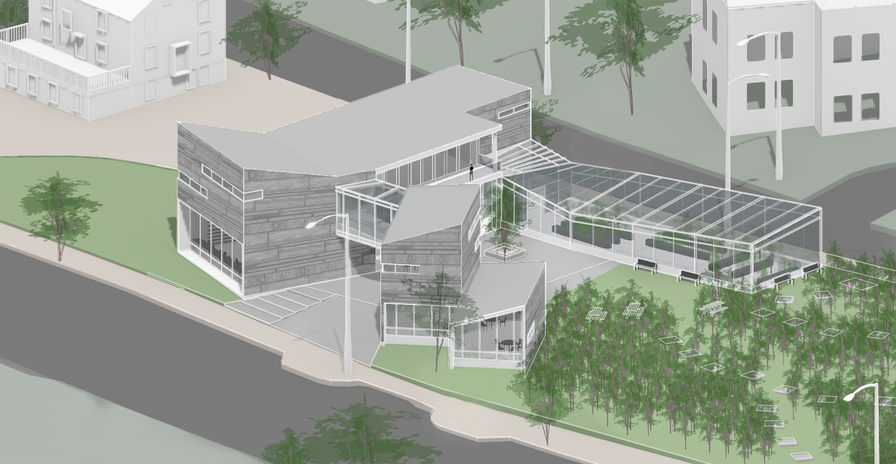

Windows of Bo Bardi Model Stool

Illustrations for post-

Fracture Apartments

Personas and Storyboarding

Responsive Redesign

MegaPlaylist Maker

Urban Forestry Center

Casa Martirani Drafting

Illustration for post-